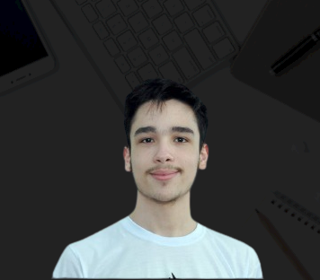

Quem eu sou?
Opa, bem vindo ao meu portfólio! Prazer, meu nome é Giovanni Lopes e atualmente tenho 16 anos (sim, ainda sou meio novo 😅). Atualmente estou aprendendo e cursando T.I, e buscando entrar no ramo de freelance como Web Designer, utilizando a ferramenta WordPress. Tenho também o básico e intermediário de front-end, que inclui HTML5 e CSS3 e JavaScript. Tenho também muito interesse em Python, inclusive já aprendi seu básico e estou avançando. Atualmente moro no Brasil, mais especificamente no estado de São Paulo. Mas meu sonho é conhecer a Europa.